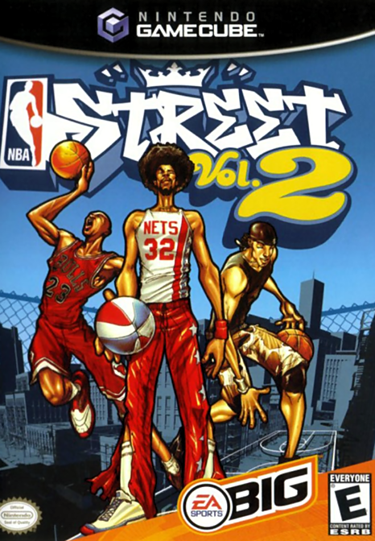
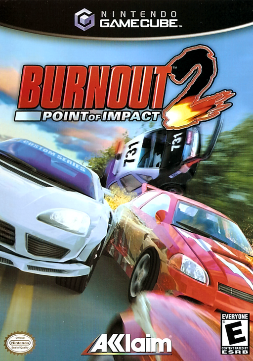
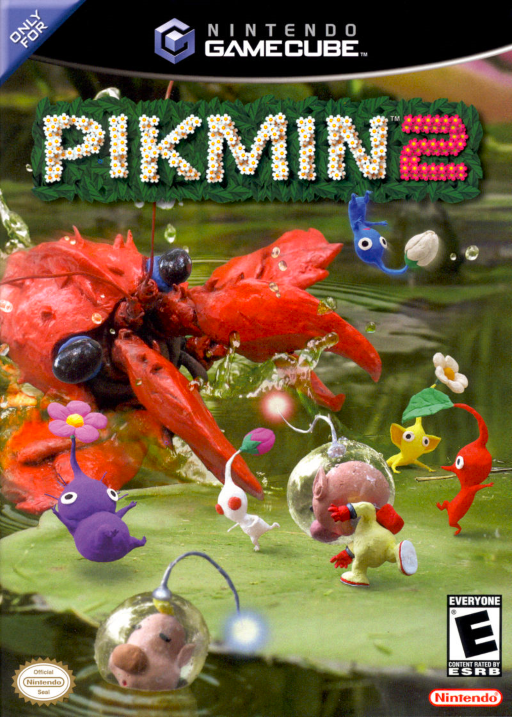
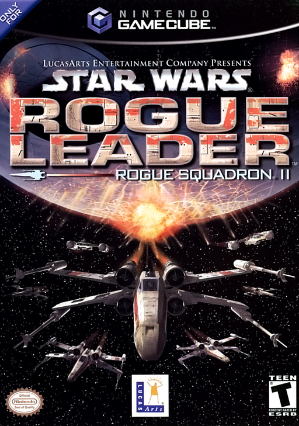
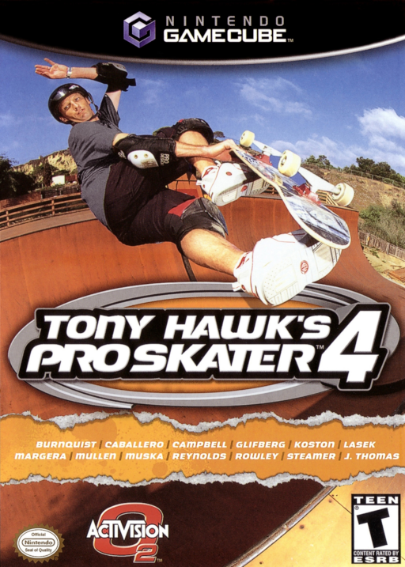
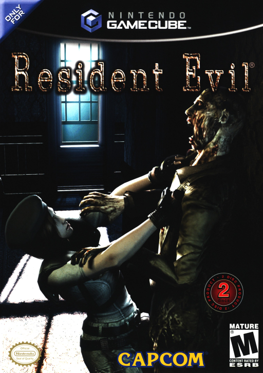
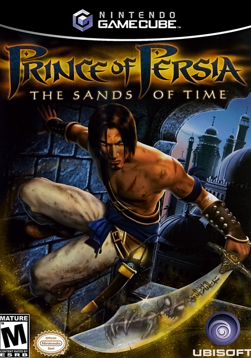
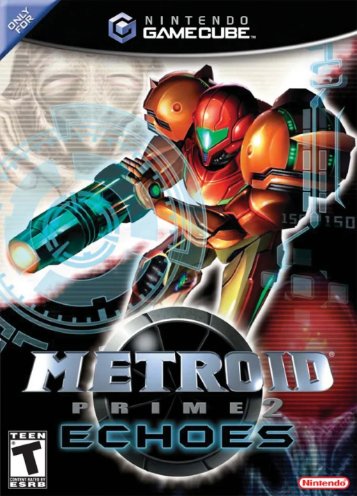
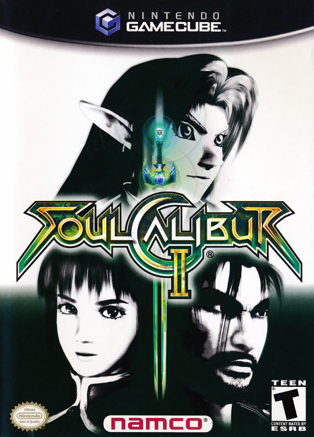
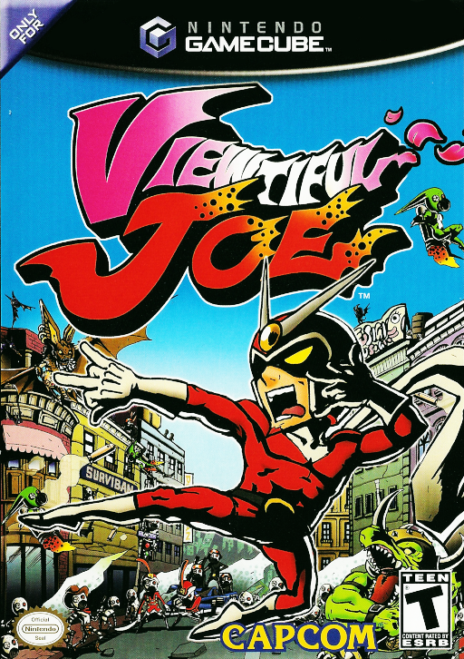

Metroid Prime, Resident Evil 4 y Wind Waker ya los conoces. Estos diez tambien fueron muy bien criticados en GameCube y hoy casi nadie los nombra. Empezamos desde abajo.
03
#10
TOP

GAMECUBE
TARROVISIONCH 10
NO SIGNAL
Inserta gameplay aqui
NBA STREET VOL. 2
GAMECUBE · 2003 · EA SPORTS BIG
▶ POR QUEBasquetbol callejero 3 contra 3 de EA Sports BIG. 88 en Metacritic para GameCube y nominado a Mejor Juego Deportivo de Accion en los premios AIAS.
04
#9
TOP

GAMECUBE
TARROVISIONCH 09
NO SIGNAL
Inserta gameplay aqui
BURNOUT 2: POINT OF IMPACT
GAMECUBE · 2003 · ACCLAIM
▶ POR QUECarreras arcade de Criterion con el modo Crash. 89 en Metacritic para GameCube y puesto 75 entre los 100 mejores juegos de Edge en 2007.
05
#8
TOP

GAMECUBE
TARROVISIONCH 08
NO SIGNAL
Inserta gameplay aqui
PIKMIN 2
GAMECUBE · 2004 · NINTENDO
▶ POR QUESecuela de Pikmin, sin limite de 30 dias y con dos lideres a la vez. 90 en Metacritic y puesto 6 en el top 20 de GameCube de IGN en 2020.
06
#7
TOP

GAMECUBE
TARROVISIONCH 07
NO SIGNAL
Inserta gameplay aqui
STAR WARS ROGUE SQUADRON II: ROGUE LEADER
GAMECUBE · 2001 · LUCASARTS
▶ POR QUECombates espaciales de Star Wars hechos por Factor 5, juego de lanzamiento de la consola. 90 en Metacritic y premio a Mejor Juego de Accion en el E3 2001.
07
#6
TOP

GAMECUBE
TARROVISIONCH 06
NO SIGNAL
Inserta gameplay aqui
TONY HAWK'S PRO SKATER 4
GAMECUBE · 2002 · ACTIVISION
▶ POR QUESkate de Neversoft con modo carrera libre por los escenarios. 91 en Metacritic para GameCube y Mejor Juego Alternativo de Deportes de GameCube en GameSpot.
08
#5
TOP

GAMECUBE
TARROVISIONCH 05
NO SIGNAL
Inserta gameplay aqui
RESIDENT EVIL (REMAKE)
GAMECUBE · 2002 · CAPCOM
▶ POR QUERemake exclusivo de GameCube del Resident Evil original, dirigido por Mikami. 91 en Metacritic y Famitsu le dio 39 sobre 40.
09
#4
TOP

GAMECUBE
TARROVISIONCH 04
NO SIGNAL
Inserta gameplay aqui
PRINCE OF PERSIA: THE SANDS OF TIME
GAMECUBE · 2003 · UBISOFT
▶ POR QUEAventura de plataformas de Ubisoft Montreal donde el Principe rebobina el tiempo. 92 en Metacritic para GameCube, y GameSpot lo nombro mejor juego de noviembre de 2003.
10
#3
PODIO

GAMECUBE
TARROVISIONCH 03
NO SIGNAL
Inserta gameplay aqui
METROID PRIME 2: ECHOES
GAMECUBE · 2004 · NINTENDO
▶ POR QUESecuela de Metroid Prime con mundo de luz y oscuridad. 92 en Metacritic, Mejor Juego de GameCube de 2004 para IGN, EGM y GameSpy.
11
#2
PODIO

GAMECUBE
TARROVISIONCH 02
NO SIGNAL
Inserta gameplay aqui
SOULCALIBUR II
GAMECUBE · 2003 · NAMCO
▶ POR QUEPelea con armas de Namco con Link como personaje exclusivo en GameCube. 93 en Metacritic y Mejor Juego de Pelea de Consola en los premios AIAS.
12
#1
EL TRONO

GAMECUBE
TARROVISIONCH 01
NO SIGNAL
Inserta gameplay aqui
VIEWTIFUL JOE
GAMECUBE · 2003 · CAPCOM
▶ EL MEJOR CRITICADOBeat 'em up con estilo de comic y poderes VFX que manipulan el tiempo. 93 en Metacritic para GameCube y Juego del Año de GameCube 2003 para IGN, USA Today y GMR.
13
ANALISIS DEL TOP
BUENOS Y OLVIDADOS
Los diez tienen respaldo serio de la critica, desde un 88 hasta un 93 en Metacritic para GameCube, con premios de Juego del Año, de E3 y de la AIAS. Los eclipso algo mas grande: otra entrega de su propia saga, otras versiones del mismo juego o juegos de la competencia de su epoca.
14
TU TURNO
¿CUAL AGREGARIAS?
¿Cual es tu joya olvidada de la GameCube? Cuentanos en los comentarios. Suscribete a Retrotarros.